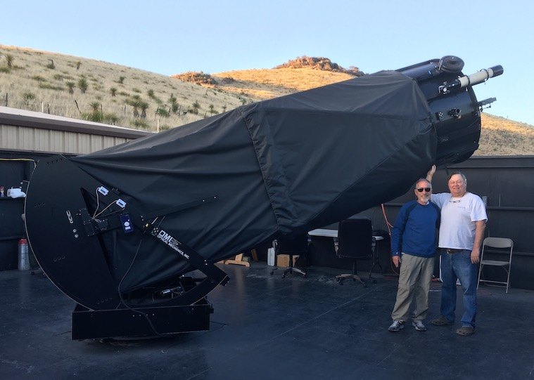
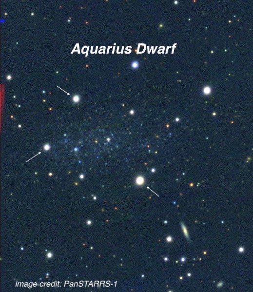
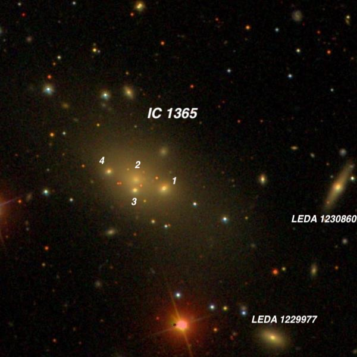
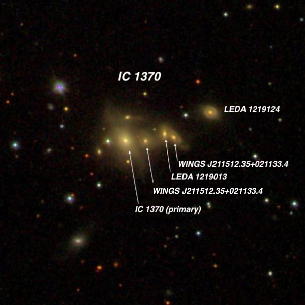
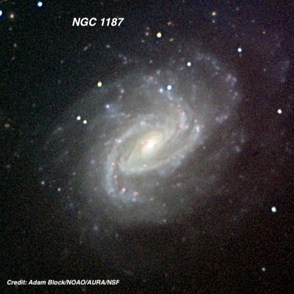
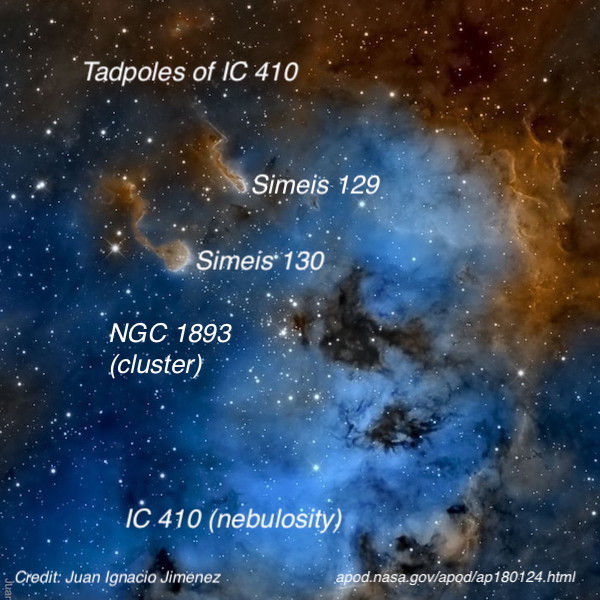

Lowrey 48 inch in October Part I
This is the first of 3 observing reports from a visit in October Jimi Lowrey in West Texas, and his superb custom-built 48” f/4.0 telescope. I flew out of Oakland on Friday, October 25th (2019) and met Howard Banich in El Paso for the three hour drive southeast along the Rio Grande and up into the Davis Mountains, passing McDonald Observatory, before arriving at Jimi’s in the afternoon. A small group of amateurs stopped by on Friday night hoping to observe that evening with us. They were skunked the night before after reserving McDonald’s 82” telescope due to bad weather. Unfortunately, Jimi’s Mega-dob had an electrical issue with his Servocat drive and we were also shut down for the night. That problem was resolved the next day (swapping a new power supply inverter) but Saturday was too windy to observe. Fortunately, starting on Sunday we ended up with three good nights - observing from about 9:00PM to 3:30AM, though with quite variable seeing conditions. The seeing started off sharp the first night and we observed at 976x, but as the evening progressed the seeing softened and we were restricted to 542x. I ended up logging about 40 objects, a few of which are highlighted below. More in the next report.
Steve Gottlieb


The Aquarius Dwarf was first catalogued by Canadian astronomer Sydney van den Bergh in 1959. In 1965, Rick Fischer and Brent Tully proposed this blue low surface brightness dwarf was a member of the Local Group. At a distance of ~3.26 million l.y, the Aquarius Dwarf is extremely isolated and a 2013 study concluded it has never tidally interacted with any known galaxy. It is thought to be an “outsider" on its first infall into the Local Group. Even in the 48” at 375x (relatively low power) this was not a prominent object. I called it a "very faint, fairly large, very low surface brightness patch elongated 3:2 E-W, ~1.6’x1.0’.” The glow nearly filled the area between three stars (arrowed on this PanSTARRS image); a mag 15.5 star attached to the east end, a mag 15 star at the north end and a mag 13.7 star at the southwest end. There was no structure except for a slightly brighter 30" core region that was midway between the mag 13.7 star and the mag 15 star. Additional mag 17 stars were superimposed on the east side and at the northeast end.

Edward Swift, the son of famed comet-hunter Lewis Swift, discovered this remarkable, merging system on September 28, 1891. At the time, 20-year old Edward was searching for Comet Tempel-Swift (discovered by Tempel in 1869 and found again by his father in 1880). Austrian astronomer Rudolph Spitaler independently discovered the galaxy just two days later at Vienna — also while searching for the comet! A 2016 study showed the system of four nuclei is about to embark on a series of major mergers, eventually building a single dominant elliptical galaxy. The Swifts only reported seeing a single object, but the 48" revealed 4 distinct nuclei in a nearly 60” x 30" glow oriented WSW-ENE. The central two nuclei were separated by only 7 arc seconds, but were resolved cleanly at 976x. The fainter southern nuclei (#3 in the image) was faint, round, ~10" diameter, while the northern core (#2) was nearly moderately bright and ~15" diameter. The outer nuclei were both 20" from the center; the western one (#1) was moderately bright, round, ~15" diameter and the eastern (#4) very faint, round, 10" diameter. Several additional group members are nearby. LEDA 1229977 , just 2.2' SW, appeared moderately bright, elongated 2:1 WSW-ENE, ~15” x 8", brighter core. A mag 12.5 star (orange-red on the SDSS image) is 1' east. LEDA 1230860 , a thin edge-on 2' west, was fairly faint with a very small bright core, ~18” x 5". LEDA 1232711 , 4’ NNE (off the edge of this image), was fairly bright, round, bright core, ~20" diameter.

This quintuple interacting system (we were able to resolve 4 components at 610x) in Aquarius was discovered by French astronomer Stephane Javelle in October 1891 with the 30-inch refractor at the observatory in Nice (south France). His description mentioned “2 faint stars are involved”. A 16th magnitude star is close east of the main galaxy (visible on this SDSS image above), but at least one his “faint stars” is probably one of the attached galaxies. Although IC 1365 and IC 1370 lie in different constellations, they are only separated by the width of the full moon! Furthermore, their redshifts are close enough to suggest they are part of the same larger cluster at a distance of ~680 million light years. Visually, the largest and brightest galaxy (IC 1370) was at the east end of the glow. It was moderately bright, round, fairly high surface brightness, 15"-18" diameter, with a sharp prominent stellar nucleus. A mag 16 star was easily visible just 10" east of center and a mag 14.5 star lies 0.9' northeast. An extremely faint galaxy (WINGS J211512.35+021133.4) was seen a mere 12 arc seconds to the west. And a bit further west was the double system LEDA 1219013 (V = 17.0/17.6). The individual galaxies were barely resolved at 610x in moments of better seeing. Finally, LEDA 1219124 is a brighter galaxy (V = 16.8) 0.9’ west-northwest of IC 1370. Other galaxies are nearby, including LEDA 1217822 (V = 15.8), a thin low surface brightness edge-on 2.2’ south-southeast of IC 1370.

This spiral was discovered by William Herschel back in December 1784. He described it as “very faint”, but when John Herschel observed it from the Cape of Good Hope much higher in the sky, he called it "bright; very large; pretty much elongated; very gradually brighter to the middle; 3.5' long, 2.5' broad; has in or near the middle a star 16 mag." E.E. Barnard was surprised William called it “very faint", as he didn’t find it difficult in his 5-inch refractor. For what it’s worth, I called it “faint” in a 8-inch, over 38 years ago. Through the 48”, the galaxy contained a bright, elongated core oriented WNW-ESE and the inner portion of the halo was clearly blotchy. A brighter arc or patch was just southeast of the core and another brighter arc was close east and northeast of the core. Finally, a subtle brighter patch is was northwest of the core. These brighter spiral segments formed a pseudo-ring oriented WNW-ESE. The outer halo was diffuse and extended ~4.5’ x 3.25', reaching a mag 15.9 star 2' N of center. Another 16th mag star was in the outer halo on the northeast side.

This is a remarkable star-formation region in Auriga, consisting of gas and dust (IC 410), a young cluster ( NGC 1893 ) and the embryonic Tadpole structures - Simeis 129 and Simeis 130 . The Tadpoles (sometimes called cometary nebulae) are sites of ongoing star formation, roughly 10 light years long, containing pre-main sequence stars eroding their cocoons of dust. The southeast Tadpole (lower left of pair) was a bright, round halo, ~30” in diameter, surrounding two stars. The tail extending towards the NE was not seen with confidence. The fainter Tadpole is 4’ NW and was similar in size. A 14th mag star was at the west end and a 15.5-mag star at the south end. A low surface brightness, diffuse tail extended to the northeast, without a sharp edge. I didn’t take notes on the emission complex IC 410, but I’ve observed it a few times previously. Here’s my last observation using my 24”, which also includes the brighter Tadpole: At 125x (unfiltered) emission nebulosity was evident surrounding and beyond the borders of open cluster NGC 1893, but only a large patch to the northwest of the cluster stood out well. A UHC filter transformed the nebula to a showpiece and it appeared bright, very large (~30' diameter), very irregular with a large darker patch to the west of the central portion of the cluster. The brightest section of nebulosity was to the NW of the cluster (as noticed without a filter), though mag 9.0 HD 242908 (a hot 04-type star) at the NW tip of the cluster is at the east edge of this bright, 6' circular patch. Somewhat fainter nebulosity enveloped the entire cluster but an extensive field of nebulosity continued south of the cluster for an additional 10'. It was difficult to see a clean edge on the south and west side as the nebulosity seemed to gradually fade away, but the entire diameter was at least 25’. The "head” of Simeis 130 (about 8’ northeast of the dark patch) was immediately picked up at 200x as a very small knot of fairly high surface brightness with at least one star involved. At 260x and 375, two very close "stars" were embedded in the glow oriented WSW-ENE, with the ENE star slightly soft (quasi-stellar).